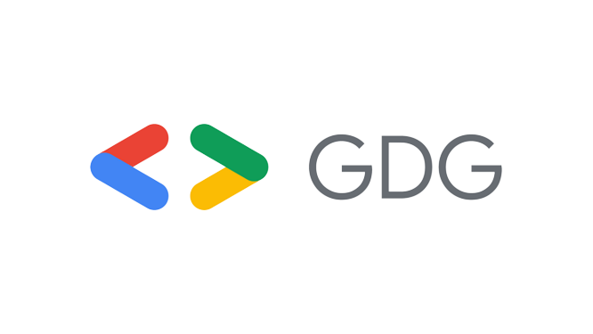
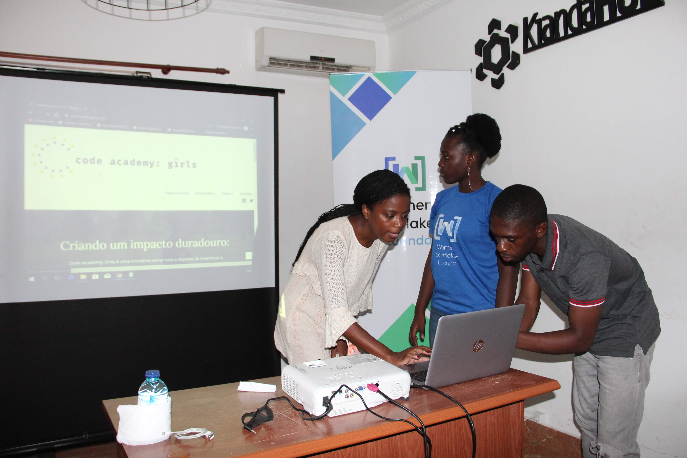
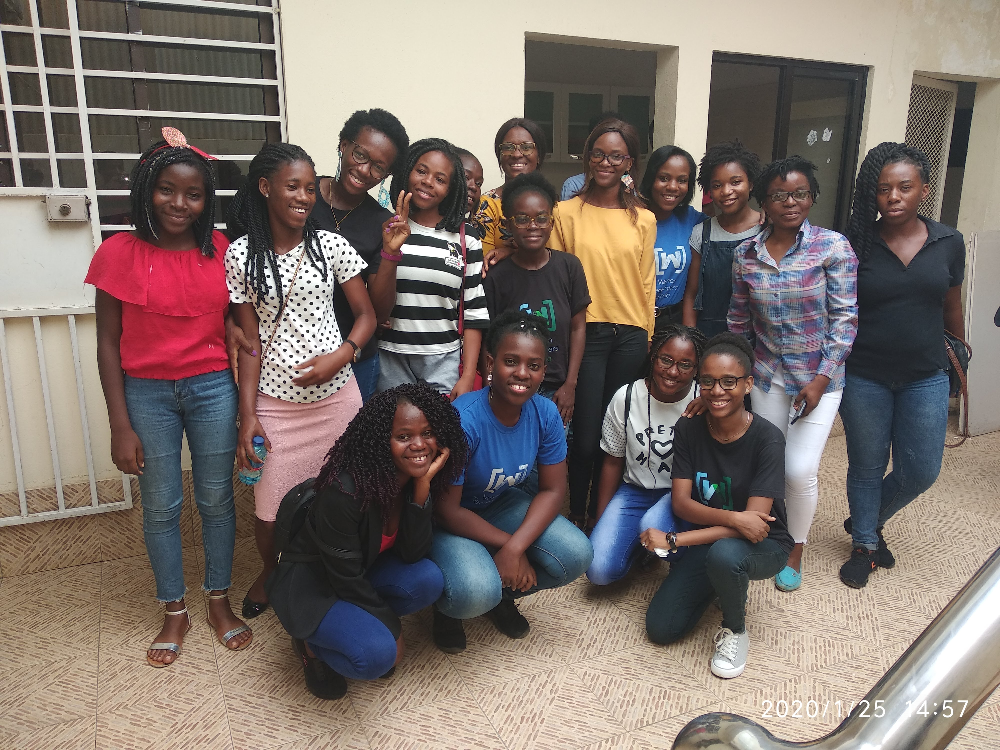
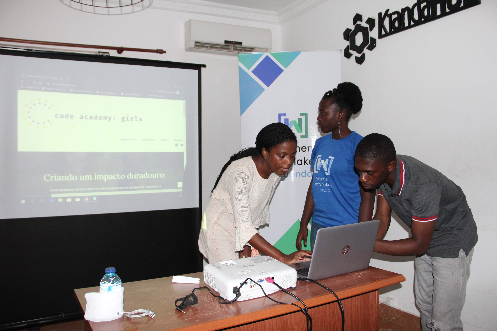
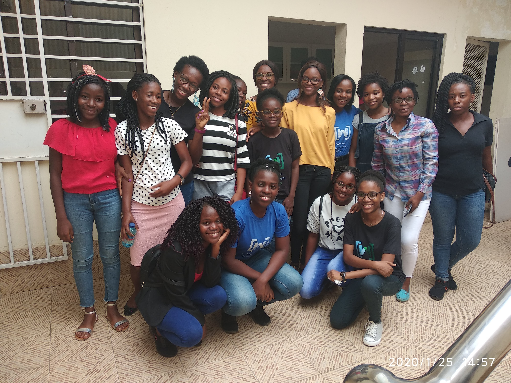
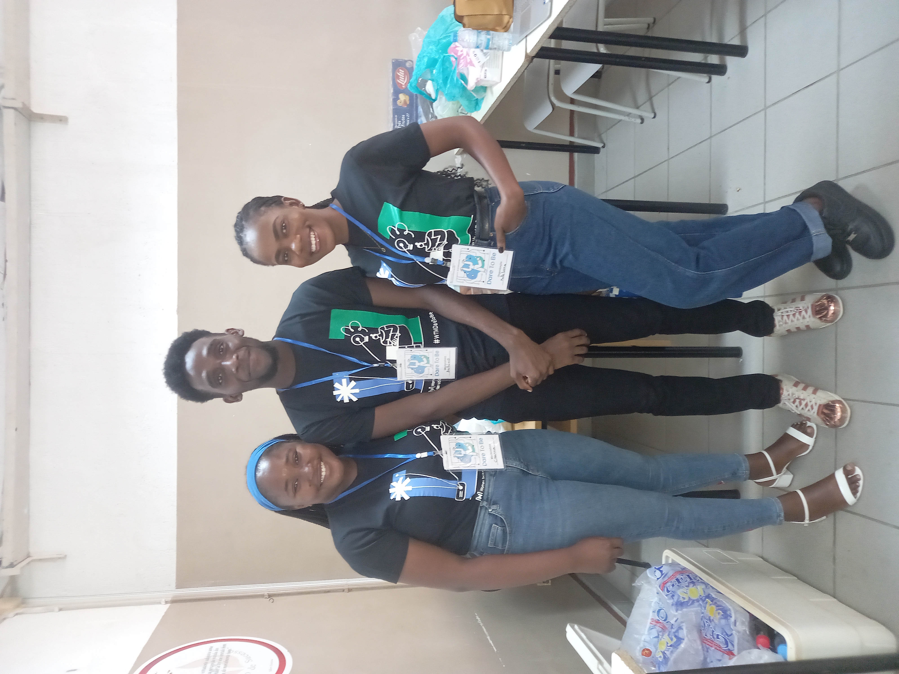
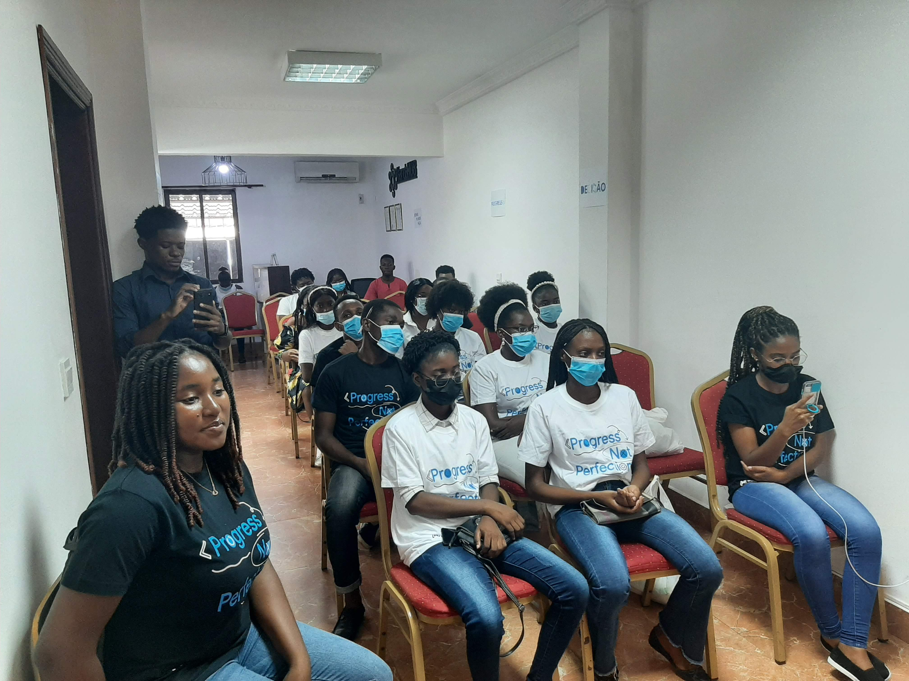
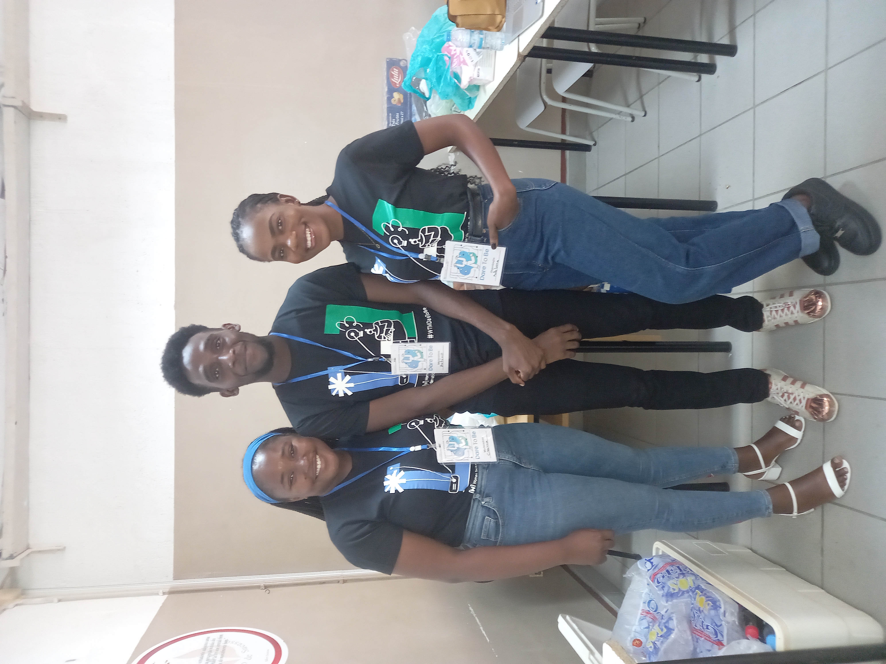
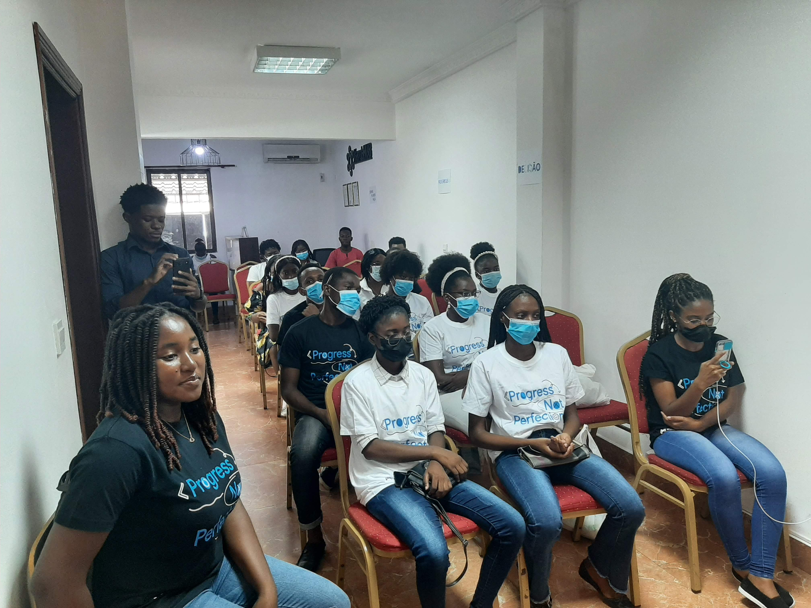

Sobre as Women Techmakers Luanda
Women Techmakers ou WTM é uma marca da Google, e um programa global para mulheres em tecnologia. Fornecendo visibilidade, comunidade e recursos para mulheres na área de TI, impulsionando inovação e participação na área. Em Angola, especificamente em Luanda, as Women Techmakers estão activas desde 2019, na qual as embaixadoras ou líderes são a Elisa Capololo e a Creuma Kuzola. Actualmente temos 54 voluntarios dentre, eles estudantes e trabalhadores. Somos 52 mulheres e 2 homens. O nosso público alvo são mulheres com idades compreendidas entre 17 a 35 anos, residentes maioritariamente nas zonas mais carenciadas de Luanda, que pertencem a classe social baixa ou média, solteiras ou casadas, filhas, mães ou esposas. Também aceitamos homens na comunidade.
Eventos
Os eventos WTM são projetados para promover um ambiente de inclusão das mulheres em tecnologia, partilhar e capacitar mulheres, criar networking, motivar, inspirar, bem como celebrar as mulheres que lideram a indústria de Tecnologia. Realizamos Bootcamp (Treinamento intensivo sobre um ou vários temas, alinhado com teoria e prática), Meetup (Encontro de pessoas com interesses em comum, para troca de experiências e conhecimentos) e Workshop (Seminário ou curso intensivo, com foco em desenvolvimento de habilidades e competências). Webinar (Seminário ou curso intensivo, com foco em desenvolvimento de habilidades e competências). IWD (International Women Day, é um evento que acontece anualmente com o objectivo de celebrar o dia internacional da mulher), Painel de debate (Espaço reservado para conversas sobre TI, no formato presencial ou online), WTM solidário (Visitas a orfanatos e doações a nível se TI e não só a comunidades carenciadas) e WTM nas escolas (Espaço para conversas e ensinamentos sobre tecnologia nas instituições de ensino secundário, ensino médio e ensino superior)
Fazemos parte do GDG Luanda, clique abaixo para ver as nossas atividades
Galeria

 




 


